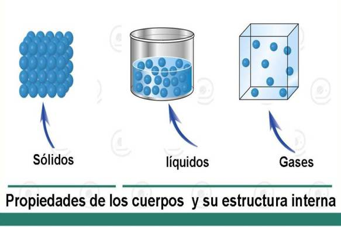
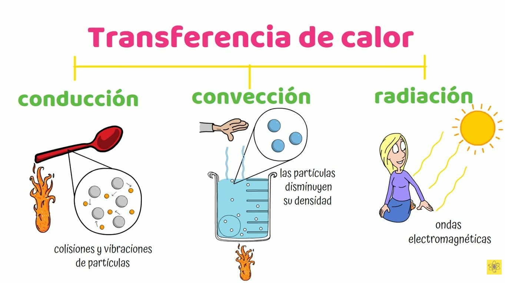

Juan Diego Torres
Ficha 3315763
Este tema me llamó la atención porque, si se piensa bien, el calor está en casi todo lo que hacemos. Sin embargo, este blog nace de una premisa fundamental: la física no es solo un conjunto de fórmulas, sino una construcción histórica y cultural. Me genera mucha curiosidad ver cómo algo que hoy nos parece tan obvio, le tomó a la humanidad siglos de errores y experimentos entenderlo.
¿Por qué estudiar la historia del calor?
Según los planteamientos de Camelo y Rodríguez (2008), revisar la historia de la física nos permite:
- • Entender cómo evolucionan las ideas científicas a través del tiempo.
- • Demostrar que la ciencia puede equivocarse y, a través de la crítica, mejorar.
- • Hace el aprendizaje más interesante al mostrar los retos de los genios del pasado.
Evolución de los Modelos Teóricos
La Teoría del Flogisto
Modelo Antiguo"Todo lo inflamable contiene un espíritu que se libera al arder."
Se creía que los cuerpos tenían una sustancia llamada flogisto que se liberaba durante la combustión. Esta teoría falló porque no explicaba correctamente cambios como el aumento de peso en los metales al oxidarse.

El Calórico: El fluido invisible
SustancialistaConsideraba al calor como un fluido material sin peso que se desplazaba de los cuerpos calientes a los fríos. Aunque fue una idea errónea, permitió los primeros cálculos sobre calorimetría y expansión.

Experimento de Rumford: El punto de quiebre
Benjamin Thompson (Conde de Rumford) observó que al perforar cañones de bronce, se generaba un calor inagotable mientras hubiera fricción. Concluyó que el calor no podía ser un fluido material, sino el resultado del movimiento (trabajo mecánico).

Teoría Cinética: Calor como Energía
DinámicoHoy entendemos que el calor está directamente relacionado con el movimiento de las partículas (energía cinética). A mayor vibración molecular, mayor energía térmica posee el sistema.

Claridad de Conceptos
Calor vs. Temperatura
- Calor: Energía en transferencia debido a una diferencia de temperatura.
- Temperatura: Medida de qué tan caliente está un cuerpo (energía cinética media).
Transferencia de Calor
- Conducción: Contacto directo entre sólidos.
- Convección: Movimiento de fluidos (líquidos o gases).
- Radiación: A través de ondas electromagnéticas.

Aplicaciones en la vida cotidiana
Ejemplos prácticos del dominio térmico:
El Motor y el Vapor: Transformando Energía
La máquina de vapor funciona mediante la expansión del vapor de agua a alta presión, lo que empuja un pistón y genera movimiento. Este proceso es la demostración perfecta de cómo el calor (energía térmica) puede convertirse en trabajo mecánico. Los motores modernos, aunque más complejos, siguen este mismo principio dinámico: aprovechar la expansión de gases calientes para mover nuestra civilización.

Clasificación de los Modelos
Modelo Sustancialista
Define el calor como una sustancia física. Fue útil para mediciones cuantitativas iniciales pero insuficiente para explicar el origen mecánico del calor.
Modelo Dinámico
Define el calor como energía en movimiento. Es el pilar fundamental para comprender la conservación de la energía y los procesos modernos.
Preguntas para pensar
¿Podemos decir que un hielo tiene calor?
Desde la física, sí. Mientras sus moléculas tengan algo de movimiento, tiene energía interna. El "frío" como tal es solo la ausencia de calor.
¿Cómo influye la historia en lo que aprendemos hoy?
Aprender los errores del pasado nos ayuda a entender que la ciencia siempre está en construcción y que las teorías actuales pueden ser mejoradas mañana.
Síntesis Final
El calor pasó de ser una sustancia mística a entenderse como una forma de energía en tránsito. Esta evolución nos recuerda que para avanzar, hay que estar dispuestos a cuestionar lo que creemos saber hoy. Gracias a este cambio de paradigma, hoy podemos dominar la energía que impulsa nuestra civilización.